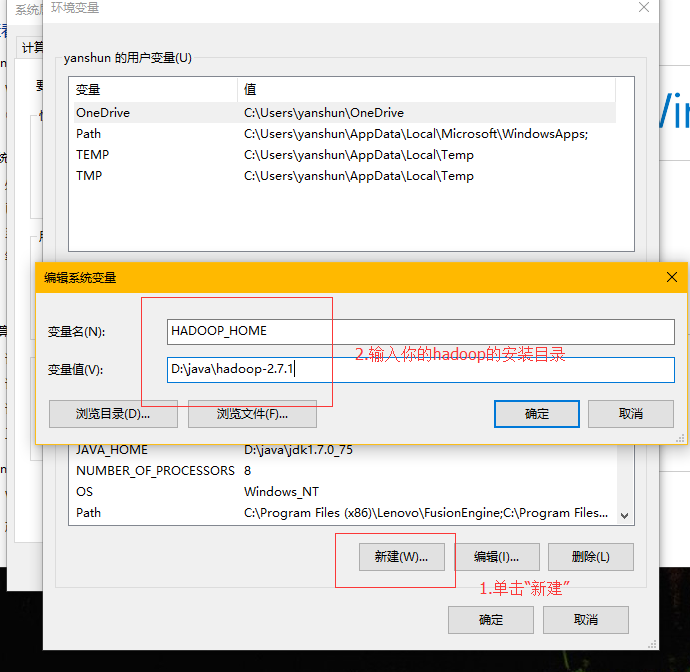
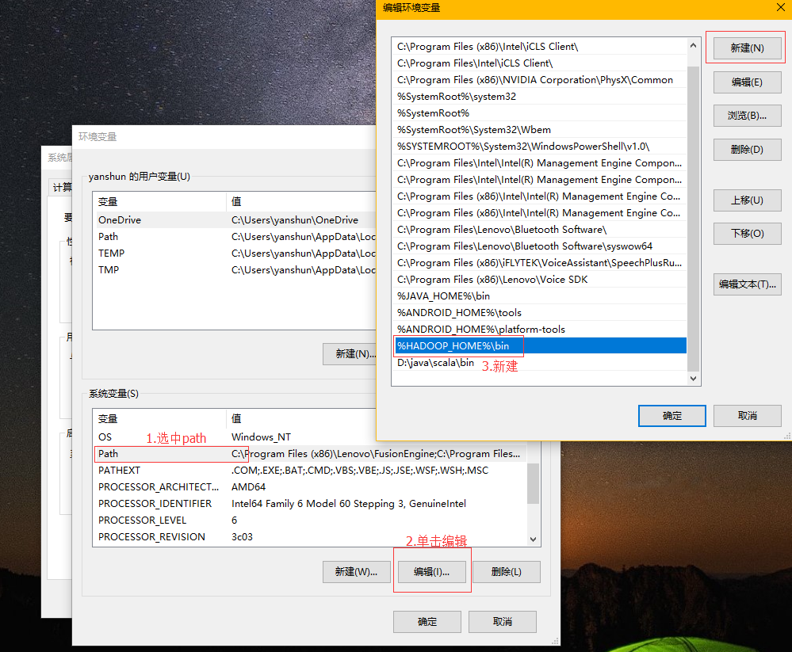
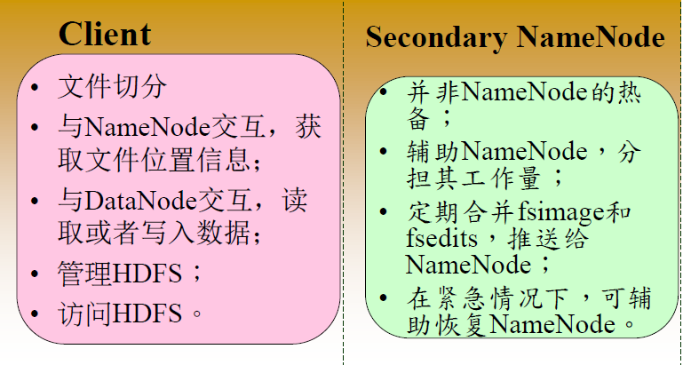
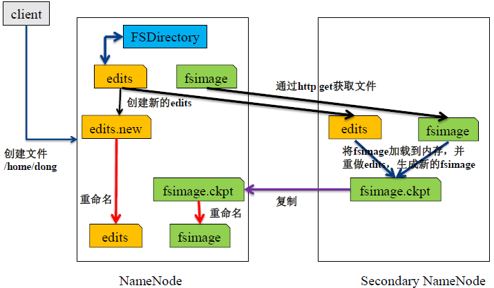

HDFS的java api
回顾：
任务
1.掌握hdfs的java操作 2.理解namenode与datanode的工作机制
目标
1.hdfs的java操作 2.hdfs的组成部分详解
第一节：使用java操作HDFS
1.1 配置开发环境
本课程的开发环境基于windows操作系统来配置的，使用的HDFS版本是hadoop2.7.1.
下载winutils的windows版本https://github.com/SweetInk/hadoop-common-2.7.1-bin
配置环境变量
第一步

第二步

第三步

压缩包（hadoop-common-2.7.1-bin）里的hadoop.dll，并拷贝到c:\windows\system32目录中。
在eclipse环境中创建一个maven项目，并引入依赖。
xxxxxxxxxx<dependency><groupId>org.apache.hadoop</groupId><artifactId>hadoop-client</artifactId><version>2.7.1</version></dependency>
1.2 HDFS控制（Java）
hadoop中关于文件操作类基本上全部是在org.apache.hadoop.fs包中，这些api能够支持的操作包含：打开文件，读写文件，删除文件等。
FileSystem，该类是个抽象类，只能通过来类的get方法得到具体类。get方法存在几个重载版本，常用的是这个：
static FileSystem get(Configuration conf);
1.3 代码演示
ximport java.io.IOException;import org.apache.hadoop.conf.Configuration;import org.apache.hadoop.fs.FSDataInputStream;import org.apache.hadoop.fs.FSDataOutputStream;import org.apache.hadoop.fs.FileStatus;import org.apache.hadoop.fs.FileSystem;import org.apache.hadoop.fs.Path;publicclass HadoopFSOperations { public static void main(String[] args) throws Exception { // createNewHDFSFile("/tmp/create2.c", "hello"); // System.out.println(readHDFSFile("/tmp/copy.c").toString()); // mkdir("/tmp/testdir"); // deleteDir("/tmp/testdir"); listAll("/tmp/"); } /* * upload the local file to the hds notice that the path is full like * /tmp/test.c */ public static void uploadLocalFile2HDFS(String s, String d) throws IOException { Configuration config = new Configuration(); FileSystem hdfs = FileSystem.get(config); Path src = new Path(s); Path dst = new Path(d); hdfs.copyFromLocalFile(src, dst); hdfs.close(); } /* * create a new file in the hdfs. notice that the toCreateFilePath is the * full path and write the content to the hdfs file. */ public static void createNewHDFSFile(String toCreateFilePath, String content) throws IOException { Configuration config = new Configuration(); FileSystem hdfs = FileSystem.get(config); FSDataOutputStream os = hdfs.create(new Path(toCreateFilePath)); os.write(content.getBytes("UTF-8")); os.close(); hdfs.close(); } /* * delete the hdfs file notice that the dst is the full path name */ public static boolean deleteHDFSFile(String dst) throws IOException { Configuration config = new Configuration(); FileSystem hdfs = FileSystem.get(config); Path path = new Path(dst); booleanisDeleted = hdfs.delete(path); hdfs.close(); returnisDeleted; } /* * read the hdfs file content notice that the dst is the full path name */ public static byte[] readHDFSFile(String dst) throws Exception { Configuration conf = new Configuration(); FileSystem fs = FileSystem.get(conf); // check if the file exists Path path = new Path(dst); if (fs.exists(path)) { FSDataInputStream is = fs.open(path); // get the file info to create the buffer FileStatus stat = fs.getFileStatus(path); // create the buffer byte[] buffer = newbyte[Integer.parseInt(String.valueOf(stat.getLen()))]; is.readFully(0, buffer); // 多次读取 // int length = 0; // while ((length = is.read(buffer, 0, 128)) != -1) { // System.out.println(new String(buffer, 0, length)); // } is.close(); fs.close(); returnbuffer; } else { thrownew Exception("the file is not found ."); } } /* * make a new dir in the hdfs * the dir may like '/tmp/testdir' */ public static void mkdir(String dir) throws IOException { Configuration conf = new Configuration(); FileSystem fs = FileSystem.get(conf); fs.mkdirs(new Path(dir)); fs.close(); } /* * delete a dir in the hdfs * dir may like '/tmp/testdir' */ public static void deleteDir(String dir) throws IOException { Configuration conf = new Configuration(); FileSystem fs = FileSystem.get(conf); fs.delete(new Path(dir)); fs.close(); } public static void listAll(String dir) throws IOException { Configuration conf = new Configuration(); FileSystem fs = FileSystem.get(conf); FileStatus[] stats = fs.listStatus(new Path(dir)); for (inti = 0; i<stats.length; ++i) { if (stats[i].isFile()) { // regular file System.out.println(stats[i].getPath().toString()); } elseif (stats[i].isDirectory()) { // dir System.out.println(stats[i].getPath().toString()); } elseif (stats[i].isSymlink()) { // is s symlink in linux System.out.println(stats[i].getPath().toString()); } } fs.close(); }}1.4 FileSystem
我们知道，首先对于任何文件系统都是与当前环境变量紧密联系一起，对于当前 HDFS来说，在创建出当前文件系统实例之前，有必要获得当前的环境变量。代码见下：
Configuration conf = new Configuration();
Configuration 类为用户提供了对当前环境变量的一个实例，其中封装了当前搭载环境的配置，这配置是在我们由 core-site.xml 设置，一般返回值默认的本地系统文件。
而对于 HDFS 为我们提供的 FileSystem，更进一步为我们提供了一套加载当前环境并建立读写路径的 API，使用的方法如下所示：
public static FileSystem get(Configuration conf) throws IOException
public static FileSystem get(URI uri, Configuration conf) throws IOException
第一个方法使用默认的 URI 地址获取当前对象中环境变量加载的文件系统，第二个方法使用传入的 URI 获取路径指定的文件系统。
1.5 FSDataInputStream
我们在对 FSDataInputStream 进行分析之前，将上面例子中代码替换为如下所示：
InputStream fis = fs.open(inPath);
程序依旧可以正常运行。
xxxxxxxxxxpublic class FSDataInputStream extends DataInputStream implements Seekable, PositionedReadable { publicsynchronizedvoid seek(longdesired) throws IOException { ((Seekable) in).seek(desired); } publicint read(longposition, byte[] buffer, intoffset, intlength) throws IOException { return ((PositionedReadable) in).read(position, buffer, offset, length); } publicvoid readFully(longposition, byte[] buffer, intoffset, intlength) throws IOException{ ((PositionedReadable) in).readFully(position, buffer, offset, length); } publicvoid readFully(longposition, byte[] buffer) throws IOException { ((PositionedReadable) in).readFully(position, buffer, 0, buffer.length); }}- 其实read(byte[] b)方法和readFully(byte []b)都是利用InputStream中read（）方法，每次读取的也是一个字节，只是读取字节数组的方式不同，查询jdk中源代码发现。
- read(byte[] b)方法实质是读取流上的字节直到流上没有字节为止，如果当声明的字节数组长度大于流上的数据长度时就提前返回，而readFully(byte[] b)方法是读取流上指定长度的字节数组，也就是说如果声明了长度为len的字节数组，readFully(byte[] b)方法只有读取len长度个字节的时候才返回，否则阻塞等待，如果超时，则会抛出异常 EOFException。
xxxxxxxxxxpublicclass FSDSample { publicstaticvoid main(String[] args) throws Exception { Configuration conf = new Configuration(); // 获取环境变量 FileSystem fs = FileSystem.get(conf); // 获取文件系统 FSDataInputStream fsin = fs.open(new Path("sample.txt")); // 建立输入流 byte[] buff = newbyte[128]; // 建立辅助字节数组 intlength = 0; while ((length = fsin.read(buff, 0, 128)) != -1) { // 将数据读入缓存数组 System.out.println(new String(buff, 0, length)); // 打印数据 } System.out.println("length = " + fsin.getPos()); // 打印输入流的长度 fsin.seek(0); // 返回开始处 while ((length = fsin.read(buff, 0, 128)) != -1) { // 将数据读入缓存数组 System.out.println(new String(buff, 0, length)); // 打印数据 } fsin.seek(0); // 返回开始处 byte[] buff2 = newbyte[128]; // 建立辅助字节数组 fsin.read(buff2, 0, 128); System.out.println("buff2 =" + new String(buff2)); System.out.println(buff2.length); }}上述代码是重复读取指定 HDFS 中文件的内容，第一次读取结束后，调用 seek(0)方法从而返回文件开始处重新进行数据读取。
1.6 FSDataOutputStream
xxxxxxxxxxpublic FSDataOutputStream create(Path f) throws IOException { return create(f, true); } public FSDataOutputStream create(Path f, booleanoverwrite) throws IOException { return create(f, overwrite, getConf().getInt("io.file.buffer.size", 4096), getDefaultReplication(), getDefaultBlockSize()); }FSDataOutputStream 也是继承自 OutoutStream 的一个子类，专用为 FileSystem 提供文件的输出流。然后可以使用 OutoutStream 中的 write 方法对字节数组进行写操作。
xxxxxxxxxxpublic class FSWriteSample { public static void main(String[] args) throws Exception { Path path = new Path("writeSample.txt"); // 创建写路径 Configuration conf = new Configuration(); // 获取环境变量 FileSystem fs = FileSystem.get(conf); // 获取文件系统 FSDataOutputStream fsout = fs.create(path); // 创建输出流 byte[] buff = "hello world".getBytes(); // 设置输出字节数组 fsout.write(buff); // 开始写出数组 IOUtils.closeStream(fsout); // 关闭写出流 }}public FSDataOutputStream create(Path f, Progressable progress) throws IOException {}有一个是Progressable progress 的形参， Progressable 接口如下所示：
xxxxxxxxxxpublicinterface Progressable { public void progress(); // 调用 progress 方法}Progressable 接口中只有一个 progress 方法，每次在 64K 的文件写入既定的输入流以后，调用一次 progress 方法，这给我们提供了很好一次机会，可以将输出进度显示，代码如下：
xxxxxxxxxxpublic class FSWriteSample2 { static int index = 0; public static void main(String[] args) throws Exception { StringBuffer sb = new StringBuffer(); // 创建辅助可变字符串 Random rand = new Random(); for (inti = 0; i< 9999999; i++) { // 随机写入字符 sb.append((char) rand.nextInt(100)); } byte[] buff = sb.toString().getBytes(); // 生成字符数组 Path path = new Path("writeSample.txt"); // 创建路径 Configuration conf = new Configuration(); // 获取环境变量 FileSystem fs = FileSystem.get(conf); // 获取文件系统 FSDataOutputStream fsout = fs.create(path, new Progressable() { // 创建写出流 publicvoid progress() { // 默认的实用方法 System.out.println(++index); // 打印出序列号 } }); fsout.write(buff); // 开始写出操作 IOUtils.closeStream(fsout); // 关闭写出流 }}注意： FSDataOutputStream 与 FSDataInputStream 类似，也有 getPos 方法，返回是文件内以读取的长度。但是不同之处在于， FSDataOutputStream 不能够使用 seek 方法对文件重新定位。
第二节：NameNode详解
2.1 NameNode的功能
- 负责客户端请求的响应
- 元数据的管理（查询，修改）
2.2 NameNode 启动过程
NameNode启动的时候首先将fsimage（镜像）载入内存，并执行（replay）编辑日志editlog的的各项操作
一旦在内存中建立文件系统元数据映射，则创建一个新的fsimage文件（这个过程不需SecondaryNameNode） 和一个空的editlog
在安全模式下，各个datanode会向namenode发送块列表的最新情况
此刻namenode运行在安全模式。即NameNode的文件系统对于客户端来说是只读的。(显示目录，显示文件内容等。写、删除、重命名都会失败)
NameNode开始监听RPC和HTTP请求
解释RPC:RPC（Remote Procedure Call Protocol）——远程过程通过协议，它是一种通过网络从远程计算机程序上请求服务，而不需要了解底层网络技术的协议
系统中数据块的位置并不是由namenode维护的，而是以块列表形式存储在datanode中
在系统的正常操作期间，namenode会在内存中保留所有块信息的映射信息

2.3 NameNode元数据管理

NameNode两个重要文件
- fsimage：元数据镜像文件（保存文件系统的目录树）
- edits：元数据操作日志（针对目录树的修改操作）
元数据镜像
- 内存中保存一份最新的
- 内存中镜像=fsimage+edis
定期合并fsimage与edits
- Edits文件过大将导致NameNode重启速度慢
- Secondary Namenode负责定期合并他们

- Secondary NN通知NameNode切换editlog。
- Secondary NN从NameNode 获得fsimage和editlog（通过http方式）。
- Secondary NN将fsimage载入内存，然后开始合并editlog。
- Secondary NN 将新的fsimage发回给NameNode NameNode 用新的fsimage替换旧的fsimage
2.4 安全模式
安全模式下，集群属于只读状态。但是严格来说，只是保证HDFS元数据信息的访问，而不保证文件的访问，因为文件的组成Block信息此时NameNode还不一定已经知道了。所以只有NameNode已了解了Block信息的文件才能独到。而安全模式下任何对HDFS有更新的操作都会失败。
对于全新创建的HDFS集群，NameNode启动后不会进入安全模式，因为没有Block信息。
安全模式相关命令
查询当前是否安全模式
xxxxxxxxxxhadoop dfsadmin -safemode getSafe mode is ON等待safemode关闭，以便后续操作
xxxxxxxxxxhadoop dfsadmin -safemode wait退出安全模式
xxxxxxxxxxhadoop dfsadmin -safemode leave设置启用safemode
xxxxxxxxxxhadoop dfsadmin -safemode enter
第三节 DataNode详解
3.1 Datanode功能
存储管理用户的文件块数据定期向namenode汇报自身所持有的block信息（通过心跳信息上报汇报的目的是，namenode如果长时间接收不到一个datanode的心跳后，说明该datanode宕机了，该datanode的数据块就被namdenode拿不到了，需要从其他机上拿该datanode的数据块副本。
3.2 Datanode掉线判断时限参数
datanode进程死亡或者网络故障造成datanode无法与namenode通信，namenode不会立即把该节点判定为死亡，要经过一段时间，这段时间暂称作超时时长。HDFS默认的超时时长为10分钟+30秒。如果定义超时时间为timeout，则超时时长的计算公式为：
timeout = 2 * heartbeat.recheck.interval + 10 * dfs.heartbeat.interval。
而默认的heartbeat.recheck.interval 大小为5分钟，dfs.heartbeat.interval默认为3秒。
需要注意的是hdfs-site.xml 配置文件中的heartbeat.recheck.interval的单位为毫秒，dfs.heartbeat.interval的单位为秒。所以，举个例子，如果heartbeat.recheck.interval设置为5000（毫秒），dfs.heartbeat.interval设置为3（秒，默认），则总的超时时间为40秒。